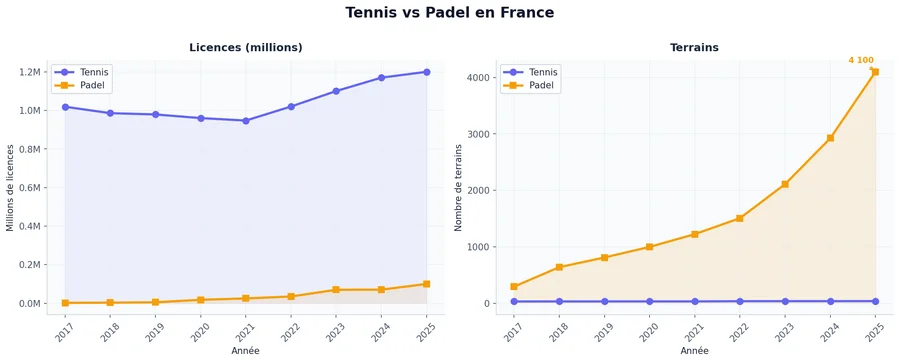
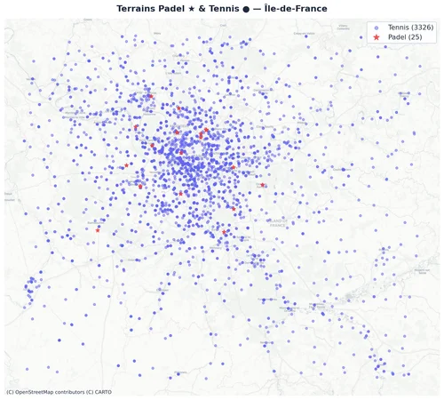
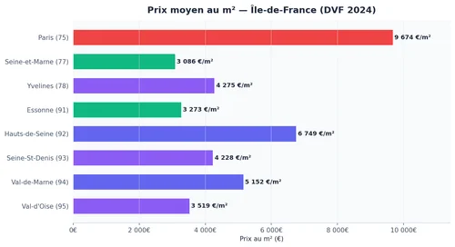
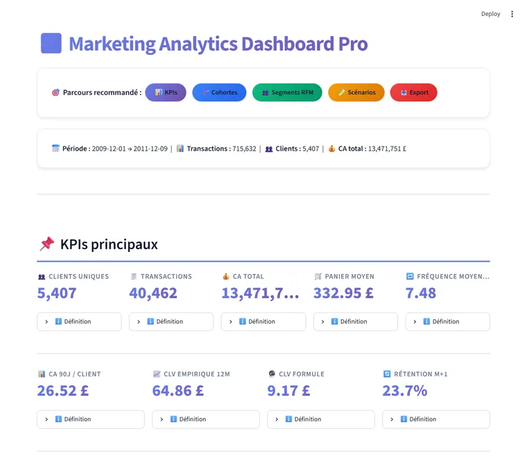
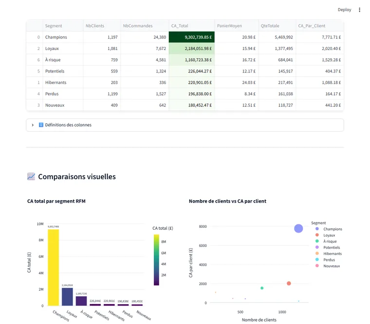
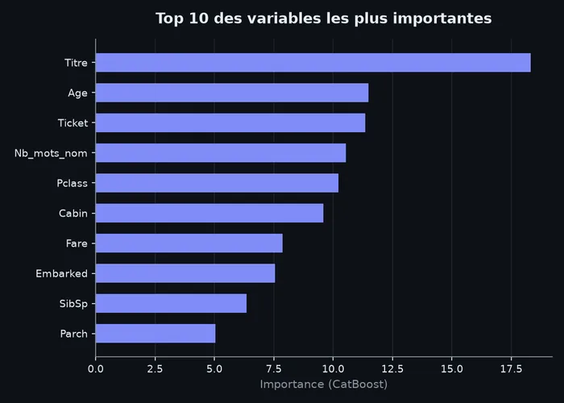
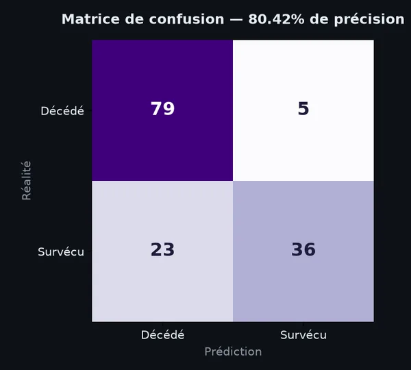
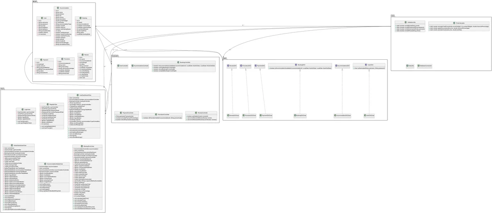

Kylian Pinto
Data & AI Engineering Student
Qui suis-je ?
Étudiant en M1 Ingénierie Data & Intelligence Artificielle à ECE Paris, je me passionne pour la transformation de données brutes en insights actionnables.
Mon parcours mêle data science, machine learning, et une solide base en programmation système (C, Java, FPGA). J'aime construire des projets end-to-end, de la collecte de données jusqu'au dashboard décisionnel.
En 2024–2025, j'ai effectué un échange académique à Hanyang University, Séoul 🇰🇷, une expérience qui m'a ouvert à la tech internationale et aux méthodes d'enseignement en anglais.
ECE Paris — M1 Data & IA
Ingénierie data, machine learning, systèmes embarqués
Hanyang University, Séoul
Échange académique Computer Science (2024–2025)
6 projets Data / ML / Web
Immobilier, marketing, ML, trafic temps réel, web
Ouvert à la collaboration
Stage, alternance, projet open source en Data & IA
Stack Technique
Data Science & IA
Data & Visualisation
Programmation
Outils & Infra
Projets Phares
Analyse Immobilière & Sportive
Conseil à un investisseur foncier : analyse des prix au m² via les données DVF (Data.gouv), cartographie interactive offre/demande sportive (Padel & Tennis), dashboard 10 widgets interactifs pour l'aide à la décision.



Marketing Analytics — RFM & CLV
Dashboard d'aide à la décision marketing sur 1M+ transactions e-commerce UK : segmentation clients RFM en 7 segments (Champions, Loyaux, À risque…), Customer Lifetime Value par 3 méthodes, simulateur de scénarios, export CRM.


Titanic Survival — CatBoost
Prédiction de survie des passagers du Titanic avec CatBoost. Feature engineering avancé : extraction des titres, indicateur enfant, gestion des valeurs manquantes. Précision : 80.68 %


Traffic Management — Apache Kafka
Système de streaming d'événements trafic en temps réel via Apache Kafka & Docker. Producer Python génère des événements (accidents, radars, embouteillages) — consumer les consomme et affiche offset + partition.
Booking App — Java OOP
Application de réservation d'hébergements avec GUI Swing, architecture MVC, base de données SQLite embarquée (zéro installation), statistiques JFreeChart, gestion promotions & avis. Téléchargeable et exécutable directement.

Sportify — Plateforme de Coaching
Plateforme web de coaching sportif : gestion des utilisateurs, des programmes d'entraînement et prise de rendez-vous. Développement full-stack HTML/CSS/JS/PHP avec interface complète.
Formation & Expériences
M1 Ingénierie Data & Intelligence Artificielle
Spécialisation en data science, machine learning, analyse statistique, systèmes décisionnels. Projets data end-to-end en conditions réelles.
Échange Académique — Computer Science
Cours en anglais : algorithmes avancés, systèmes distribués, IA. Immersion dans un écosystème tech international et multiculturel.
Formation Ingénierie Généraliste
Bases solides en programmation (C, C++, Java), électronique, systèmes embarqués (FPGA, Arduino), développement web. Projets pluridisciplinaires en équipe.
Travaillons Ensemble
Étudiant en M1 Data & IA, ouvert à toute opportunité de stage, alternance ou collaboration en Data Science et Intelligence Artificielle.